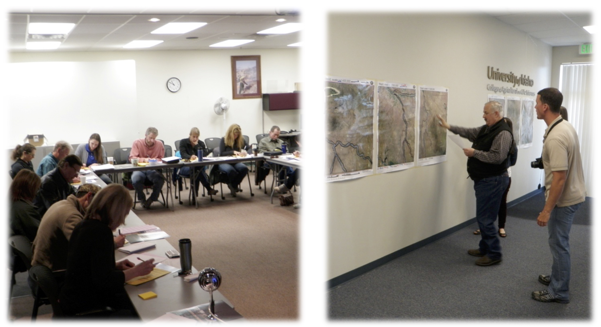

Title: A social-ecological impact assessment for public lands management: application of a conceptual and methodological framework
Authors: Amanda Bentley Brymer, Joseph Holbrook, Ryan Niemeyer, Alexis Suazo, J. Wulfhorst, Kerri Vierling, Beth Newingham, Timothy Link, Janet Rachlow
Journal: Ecology and Society (2016) doi:10.5751/ES-08569-210309.
Abstract: According to the U.S. National Environmental Policy Act of 1969 (NEPA), federal action to manipulate habitat for species conservation requires an environmental impact statement, which should integrate natural, physical, economic, and social sciences in planning and decision making. Nonetheless, most impact assessments focus disproportionately on physical or ecological impacts rather than integrating ecological and socioeconomic components. We developed a participatory social-ecological impact assessment (SEIA) that addresses the requirements of NEPA and integrates social and ecological concepts for impact assessments. We cooperated with the Bureau of Land Management in Idaho, USA on a project designed to restore habitat for the Greater Sage-Grouse (Centrocercus urophasianus). We employed questionnaires, workshop dialogue, and participatory mapping exercises with stakeholders to identify potential environmental changes and subsequent impacts expected to result from the removal of western juniper (Juniperus occidentalis). Via questionnaires and workshop dialogue, stakeholders identified 46 environmental changes and associated positive or negative impacts to people and communities in Owyhee County, Idaho. Results of the participatory mapping exercises showed that the spatial distribution of social, economic, and ecological values throughout Owyhee County are highly associated with the two main watersheds, wilderness areas, and the historic town of Silver City. Altogether, the SEIA process revealed that perceptions of project scale varied among participants, highlighting the need for specificity about spatial and temporal scales. Overall, the SEIA generated substantial information concerning potential impacts associated with habitat treatments for Greater Sage-Grouse. The SEIA is transferable to other land management and conservation contexts because it supports holistic understanding and framing of connections between humans and ecosystems. By applying this SEIA framework, land managers and affected people have an opportunity to fulfill NEPA requirements and develop more comprehensive management plans that better reflect the linkages of social-ecological systems.
The article is open source through Ecology and Society website and available here.
